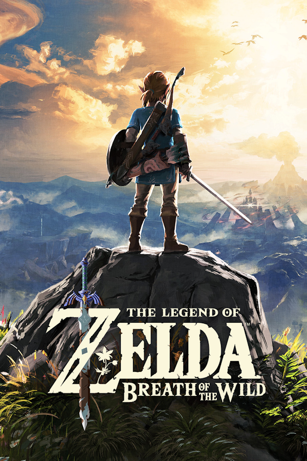
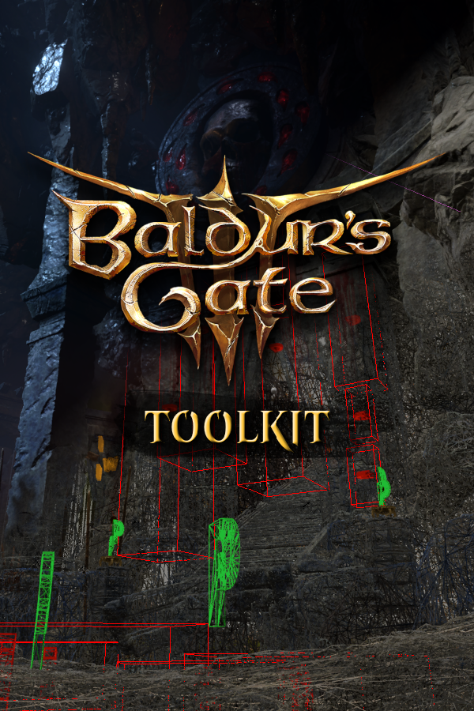
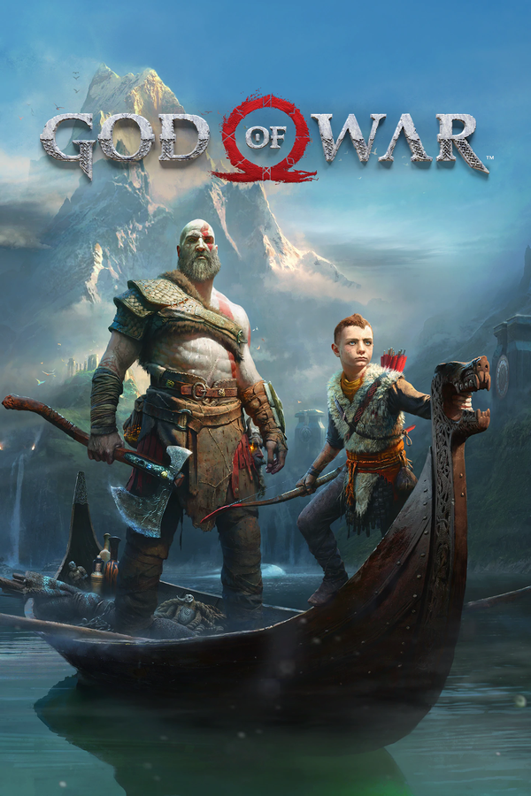

SG
Luiz
Mestre11.420 pts
Acompanhe os jogadores mais ativos do GameHub, suas patentes, taxa de vitórias e os títulos mais bem avaliados pelos usuários.
11.420 pts
12.850 pts
10.975 pts
Nenhum jogador encontrado com esses critérios.
| Posição | Jogador | Patente | Jogos | Taxa de Vitória | Pontuação |
|---|---|---|---|---|---|
| #1 ▲ | 1 OliveiraFavorito: Elden Ring |
Desafiante | 42 | 81% | 12.850 pts |
| #2 ▼ | 2 LuizFavorito: Baldur's Gate 3 |
Mestre | 38 | 74% | 11.420 pts |
| #3 ● | 3 ChristopherFavorito: Sekiro |
Mestre | 35 | 71% | 10.975 pts |
| #4 ▲ | 4 MateusFavorito: Ghost of Tsushima |
Diamante | 31 | 68% | 9.840 pts |
| #5 ● | 5 MennaFavorito: Zelda: Breath of the Wild |
Diamante | 29 | 65% | 9.210 pts |
| #6 ▲ | 6 BernardoFavorito: God of War Ragnarök |
Diamante | 27 | 63% | 8.790 pts |
| #7 ▼ | 7 Aleatorio1Favorito: Cyberpunk 2077 |
Platina | 25 | 60% | 8.340 pts |
| #8 ▲ | 8 Aleatorio2Favorito: Civilization VI |
Platina | 24 | 59% | 7.980 pts |
| #9 ● | 9 Aleatorio2Favorito: Bloodborne |
Platina | 21 | 57% | 7.510 pts |
| #10 ▲ | 10 Victor(o pior do mundo)Favorito: Persona 5 Royal |
Platina | 20 | 55% | 7.190 pts |
| Posição | Jogo | Gênero | Avaliações | Nota da Comunidade |
|---|---|---|---|---|
| #1 |  Zelda: Breath of the Wild |
AventuraMundo aberto | 1.240 votos | |
| #2 |  Zelda: Tears of the Kingdom Zelda: Tears of the Kingdom |
AventuraMundo aberto | 1.115 votos | |
| #3 |  Baldur's Gate 3 |
RPGEstratégia | 1.390 votos | |
| #4 |  God of War (2018) |
AçãoAventura | 980 votos | |
| #5 |  Persona 5 Royal Persona 5 Royal |
RPG | 860 votos | |
| #6 |  The Witcher 3: Wild Hunt The Witcher 3: Wild Hunt |
RPGMundo aberto | 1.520 votos |
Registre títulos zerados do catálogo do GameHub no seu perfil.
Escreva análises úteis para ajudar outros jogadores da comunidade.
Bônus especial para jogadores que platinam desafios completos.